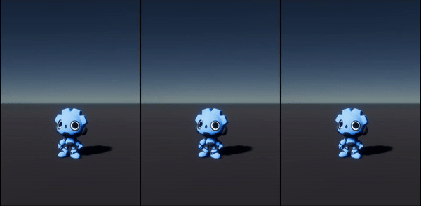

Tween Component
I made a Tween component that allows me to animate things inside the editor. With this project, I learned how to create custom inspectors for components.
Video Demo
Here is a little demo to show you how to make an animation using the tween component.
Overview
The Tween component is an easy to use script that allows me to animate the position/rotation/scale of a 3D object or UI element.
I just need to add the component to the object and then change the parameters
Functions
- Play: This button calls the function play.
- Play Everything: This button calls the function play for every tween component on the object.
- Stop Everything: This button calls the stop function for every tween component on the object.
Parameters
- Tween Duration: This parameter represents the duration of the tween.
- Delay: This parameter represents the delay before the tween is played.
- Curve: This parameter represents how the value will change over time.
Tween Types
This is used to set which variable will be impacted in the object's transform.
- None: Do nothing.
- Move: Change the object's relative position.
- Scale: Change the object's relative scale.
- Rotate: Change the object's relative rotation.
Auto Play & Loop
I can toggle whether the tween should start automatically and set it to play indefinitely.
Initial Variables
This parameter is used to set the initial variables from which the tween will start.
- To: The object will start the tween from the objects values (based on the tween type) then tween to the tween values (X,Y,Z).
- From: The object will start the tween from the tween values (X,Y,Z) then tween to its values before the tween started (based on the tween type).
Tween Target Mode
This parameter allows me to switch between 2 targeting modes.
-
Value: Use the Vector3
-
Target: Use the object's target variables (based on the tween type).
Callback
- Completed: This event is invoked at the end of the tween.